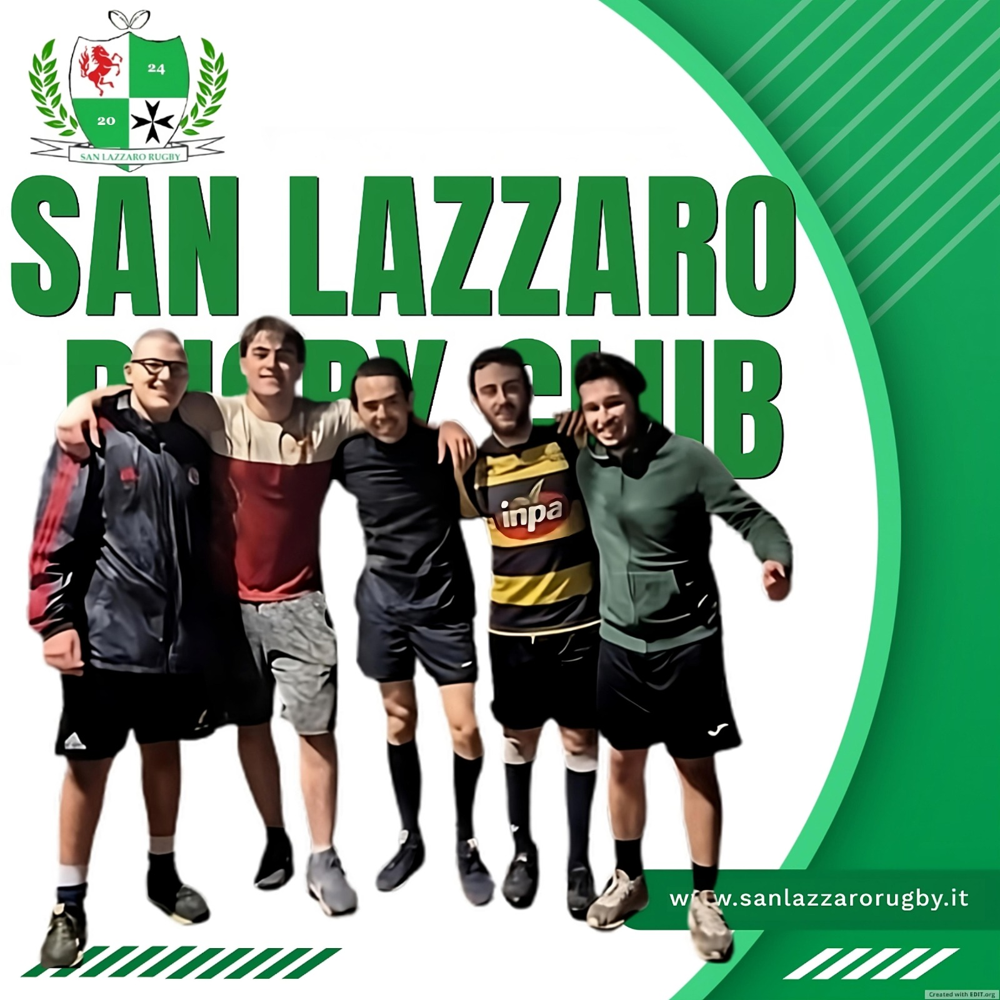

Ultime Notizie

19/09/2024
San Lazzaro Rugby Club: raggiunti i primi 6 membri!
Abbiamo raggiunto un traguardo importante: 6 membri si sono già uniti al club, con l'aggiunta imminente di un giocatore argentino esperto. Inoltre, stiamo collaborando con il comune per migliorare l'illuminazione al campo e abbiamo acquistato lampade portatili. Scopri di più su questi sviluppi e sui nostri piani futuri.